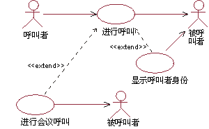
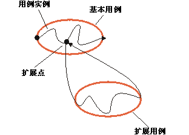
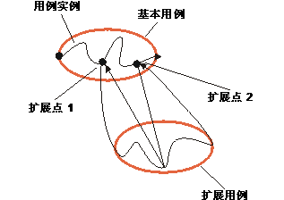

| 指南：扩展关系 |
 |
|
说明扩展关系将扩展用例与基本用例连接起来。 通过在基本用例中引用扩展点，可以定义在基本用例的哪些位置插入扩展用例（关于扩展点的讨论请参阅工作产品指南：用例）。 扩展用例常常是抽象的，但并不一定是抽象的。 可将扩展用于以下几种情况：
扩展是有条件的，这意味着它的执行取决于在执行基本用例期间发生了什么。 基本用例不控制扩展的执行条件 － 这些条件在扩展关系内有所描述。 扩展用例可以访问和修改基本用例的属性。 但基本用例却看不到扩展用例，也不能访问它们的属性。 基本用例可通过扩展进行隐式修改。您还可以说基本用例定义了一个模块化框架，可向其添加扩展，但基本用例根本无法看到具体的扩展。 基本用例内部就其本身而言应该是完整的，这意味着它在不引用任何扩展的情况下应是可理解的和有意义的。 但是，基本用例并非独立于扩展，因为如果不遵循扩展，它就不能执行。 示例： 用例“拨打会议电话”和“显示致电者身份”都是基本用例“拨打电话”的扩展。 在电话系统中，提供给用户的主要服务是由用例“拨打电话”来表现的。 可选服务的示例有：
我们可以将这些可选服务所需要的行为表现为基本用例“拨打电话”的扩展用例。 这是扩展关系的正确用法：因为“拨打电话”本身就是有意义的，您无需阅读扩展用例的描述就能理解基本用例的主要用途，且扩展用例具有可选的特征。 如果基本用例和“基本加扩展”用例必须明显是可实例化的，或者如果您想要通过添加来修改基本用例中的行为，则应使用用例泛化关系（请参阅工作产品指南：用例泛化关系）。 扩展用例可以由一个或多个插入段组成，每个插入段都可以在其中构建备选路径。 这些插入段递增地修改基本用例的行为。 扩展用例中的每个插入段都可以在基本用例中的单独位置插入。 这意味着扩展关系具有一系列对扩展点的引用，引用的数量与扩展用例中插入段的数量相等。每个扩展点都必须定义在基本用例中。 一个基本用例包含几个扩展关系，这意味着一个用例实例在其生命期内可以遵循多个扩展。 一个扩展用例可以扩展到几个基本用例中，但这并不表示这几个基本用例之间存在任何依赖关系。 甚至在同样的扩展用例和基本用例之间也可以有多个扩展关系，前提是扩展是在基本用例的不同位置插入的。 这意味着不同的扩展关系需要引用基本用例中的不同扩展点。 扩展用例本身可以是扩展关系、包含关系或泛化关系中的基本用例。 例如，这意味着扩展用例可以嵌套方式扩展其他扩展用例。 执行扩展如果执行基本用例的某一用例实例触及基本用例中的某个位置，该位置定义了扩展点，则会评估相应扩展关系的条件。 如果条件为真或不存在，用例实例将遵循扩展（或者在扩展内部与扩展点相对应的插入段）。 如果扩展关系的条件为假，则不执行扩展。 就象所有用例一样，扩展用例可以有基本事件流和备选事件流（关于事件流结构的讨论请参阅工作产品指南：用例）。用例实例将在扩展中采用哪条确切路径，这取决于之前在扩展中发生了什么（用例实例的状态），还取决于在执行扩展时与参与者的交互中发生了什么。 一旦用例实例执行了此扩展，用例实例会在基本用例停止之处继续执行基本用例。  遵循基本用例及其扩展的用例实例。 扩展用例可以有多个插入段，每个插入段都与其自身在基本用例中的扩展点相关。 如果是这种情况，用例实例将恢复基本用例的执行，并继续在扩展关系中指定的下一个扩展点执行。 在该点，它将执行扩展用例的下一个插入段。重复该操作，直到执行完最后一个插入段。 请注意，只在第一个扩展点检查扩展关系的条件 － 如果条件为真，用例实例则必须执行所有的插入段。  遵循基本用例和扩展用例（后者具有两个插入段）的用例实例。 扩展关系的多重性将限制整个扩展中可能发生的重复次数。请注意，重复的是整个扩展（受多重性的限制），而不仅仅是一个插入段。
记录扩展关系
|
© Copyright IBM Corp. 1987, 2006. All Rights Reserved. |